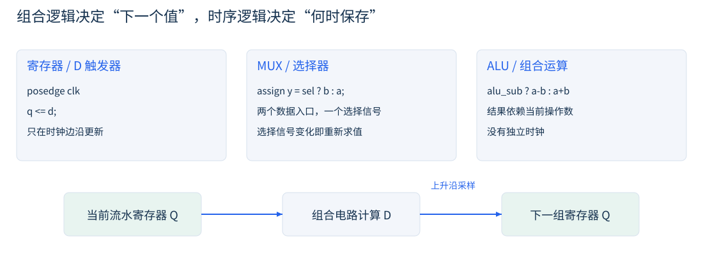
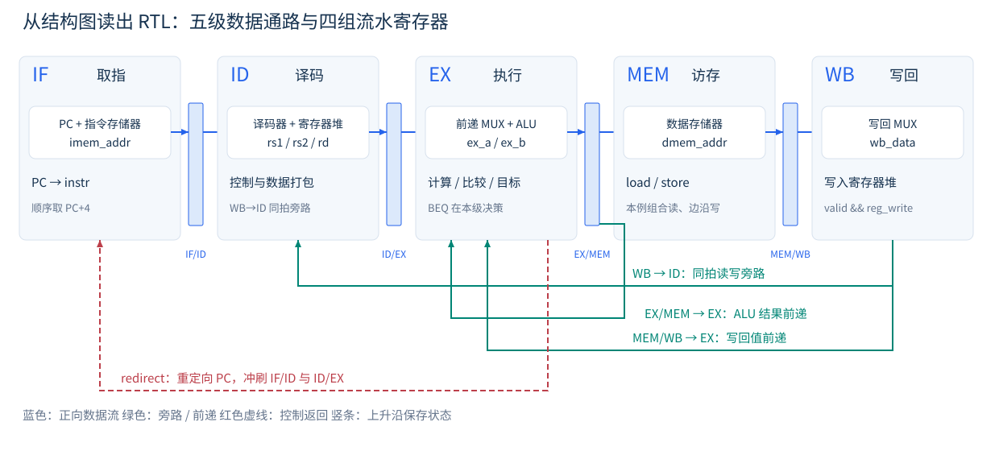
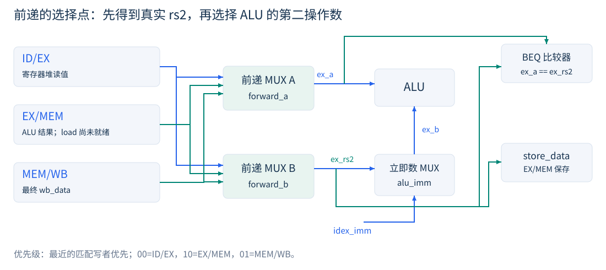
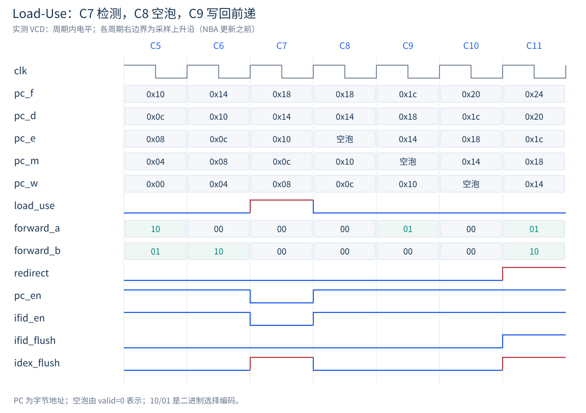
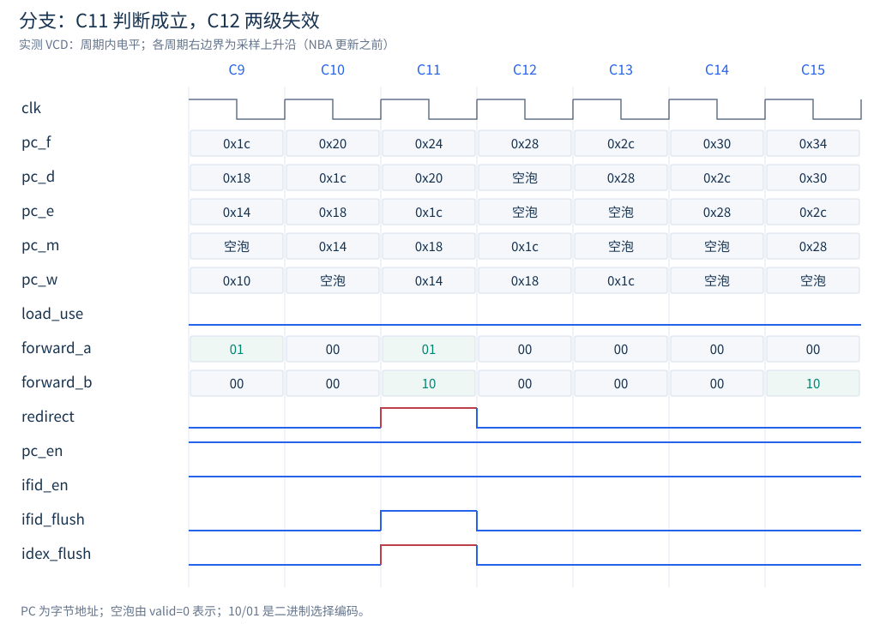
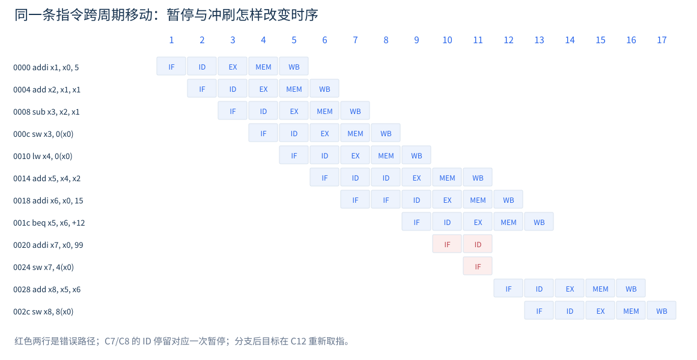

4.04 五级流水线：从结构图到 RTL
4.04.1 先把一条指令的工作分开，再让多条指令重叠
单周期处理器把取指、译码、读寄存器、运算、访存和写回串在一个时钟周期内。 画数据通路时，我们很容易沿着箭头说出一条指令走过哪些部件；开始写 RTL 时， 更重要的问题却是：哪些信号只是当前时刻的组合结果，哪些信号必须保存到下一拍？ 五级流水线正是围绕这个问题重新安排状态边界。
本节以第 4.02 节的单周期思想为起点，把一条指令的处理划分为 IF（取指）、ID（译码与读寄存器）、EX（执行）、MEM（访存）和 WB（写回）。 相邻阶段之间加入流水寄存器，保存该条指令后面还要使用的数据和控制信息。 划分完成后，同一周期内可以同时有五条不同的指令分别占据五个阶段。 每一级中的组合电路并行工作，在同一个上升沿把结果交给下一级。
本节结束时，读者应当能够从结构图中圈出状态元件，把跨级信号整理成字段表， 并解释一个时钟边沿上四组流水寄存器为什么同时更新却不会让指令一下穿过四级。 第 4.05 节继续解决重叠执行带来的数据相关和控制相关。 读者应先完成第 2.4 节的模块、组合逻辑和时序逻辑练习。 这里沿用前文“先想电路、再写代码”的方法，不重复 Verilog 基础语法，也不把实验扩展成一颗完整 CPU。
本实验的明确边界
数据宽度为 32 位，顺序、单发射、五级流水；只实现 ADD、SUB、ADDI、LW、SW 和 BEQ。 不包含异常、中断、CSR、Cache、乘除法、总线等待、字节访存和完整 RV32I 合规性。 因此文中的“教学数据通路”不能直接标记为完整 RV32I 处理器。
4.04.2 先写时序合同，才能判断结构图是否正确
流水线的分级是一种微架构选择，指令集并不规定必须采用五级结构。 RV32I 规定寄存器、指令编码和可见效果，例如 x0 恒为零、LW 按有效地址取一个字、 BEQ 比较两个寄存器并使用相对当前指令 PC 的分支偏移(RISC-V International 2026)。 指令在哪一级读寄存器、存储器何时返回数据、分支在哪一级决策，则必须由实现者说明。 本实验采用表 4.1 的时序合同，后面的暂停次数和波形均在这些条件下成立。
| 项目 | 本实验的约定 |
|---|---|
| 时钟与复位 | 上升沿触发；高电平同步复位。仿真周期为 10 ns。 |
| 取指接口 | 独立指令存储器，组合读；PC 稳定后，本周期内得到指令。 |
| 数据接口 | 独立数据存储器，组合读、上升沿写；只接受对齐的 32 位字访问。 |
| 寄存器堆 | 两个组合读端口、一个上升沿写端口；显式提供 WB 到 ID 的同拍旁路。 |
| 分支 | BEQ 在 EX 比较并计算目标；默认顺序取指，分支成立时重定向。 |
| 完成时间 | ALU 结果在 EX 结束时可供后续级使用；load 数据在 MEM 结束时可供后续级使用。 |
| 结构资源 | 指令存储器与数据存储器分离，本实验不产生二者争用同一端口的结构冒险。 |
这里的组合读存储器是为了把注意力集中在流水线控制。 FPGA 的同步块 RAM 通常要求先在时钟边沿采样地址，再输出数据；AXI 和 Cache 还可能插入不定长等待。 因此不能把本例的数组简单替换成这些资源，就继续沿用“load-use 总是停一拍”的结论。 接入 SoC 时，应先核对请求何时被接受、响应何时有效，以及等待期间哪些流水级需要保持。 更一般的 ready/valid 背压协议属于接口扩展，不在本例的固定延迟模型内。
4.04.3 三种结构，三种 RTL 阅读方法

寄存器保存跨周期的状态。
结构图中的寄存器不是一根被命名的数据线，而是保存旧值的状态元件。 always @(posedge clk) 中的非阻塞赋值描述上升沿采样。 若某个分支没有对寄存器赋值，该寄存器保留原值；这正是时钟使能的行为。 代码中的 reg 只是一种 Verilog 变量类型，是否综合成触发器要看赋值所在的过程，不能仅凭声明判断。
MUX 选择当前要使用的输入。
assign y = sel ? b : a; 表示二选一组合电路。 在流水线里，PC 选择器决定顺序地址还是分支目标，ALU 输入选择器决定寄存器值还是立即数， WB 选择器决定 ALU 结果还是载入数据。 选择器本身不使指令“进入下一拍”；只有结果被寄存器采样，状态才发生推进。
ALU 根据输入持续计算。
加法和减法可直接用运算符表达。本实验使用一个控制位 alu_sub 选择加减。 综合器可以据此实现共享的加减电路，具体门级实现由综合优化决定。 组合逻辑中的默认赋值则保证每条路径都有确定输出，避免无意引入锁存器。
| 图上的部件 | 本例代码形式 | 阅读时的关键问题 |
|---|---|---|
| PC 寄存器 | 上升沿过程 + 使能 | 复位、重定向、暂停、顺序推进，谁的优先级更高？ |
| 流水寄存器 | 一组非阻塞赋值 | 数据、目的寄存器号和控制信号是否属于同一条指令？ |
| 译码器 | 完整默认值 + case | 这条指令真正读取哪些源寄存器，后面需要哪些控制？ |
| 寄存器堆 | 数组 + 双组合读 + 单时序写 | x0 是否保持零；WB 和 ID 同拍访问同一地址时得到什么？ |
| MUX / ALU | 连续赋值或组合过程 | 选择条件来自哪一级；输入是旧读值还是前递后的新值？ |
| 存储器写口 | 地址、数据、写使能 | 写使能是否受有效位控制，错误路径能否造成写入？ |
4.04.4 把数据通路切成五级

IF 用当前 PC 访问指令存储器，把取回的指令和该指令的 PC 交给 IF/ID。 ID 解析指令、读取寄存器并形成立即数，把执行所需的信息交给 ID/EX。 EX 计算算术结果或访存有效地址；BEQ 也在这里比较，并计算目标地址。 MEM 对 load 读取数据、对 store 写入数据。非访存指令在这一阶段只传递结果。 WB 在 ALU 结果与载入数据之间选择，更新目的寄存器。
以 lw x4, 0(x0) 为例，EX 做的是 的地址计算，MEM 才读取地址 0 对应的数据， WB 再写 x4。以 sw x3, 0(x0) 为例，EX 同样计算地址，但还必须把 x3 的值保存到 EX/MEM， MEM 才能用它作为写数据。地址和写数据是两条不同的路径。 store 不写通用寄存器，它的 reg_write 必须为 0。
增加流水级不等于单条指令更快。
若各级组合延迟为 ，流水寄存器开销为 ，时钟周期需满足 。理想情况下， 条指令经过五级流水需要 个周期；单条指令仍然要跨过五级。 举一个只用于理解的数值例子：单周期组合路径为 10 ns，五级各为 2 ns，寄存器开销为 0.2 ns。 单条指令的流水延迟为 11 ns，但长指令流的完成间隔可接近 2.2 ns。 这些数字不是本工程的综合测量结果；本实验只验证功能与周期行为，不报告可达到的 FPGA 主频。
4.04.5 流水寄存器保存的是“一条指令的上下文”
最常见的错误是只保存计算数据，却让控制信号直接使用 ID 当前译出的结果。 当一条 load 已经进入 MEM 时，ID 中可能是一条 add。若 MEM 仍使用当前 ID 的 mem_read， 访存行为就由另一条指令控制了。因此，控制信号也必须逐级寄存。 表 4.3 给出本例实际字段与后续用途，读者可以逐项与 pipeline_demo.v 的声明对应。
| 边界 | 字段类别 | 下一阶段为什么需要它 |
|---|---|---|
| IF/ID | valid、pc、instr | ID 需要机器指令，分支后续需要原始 PC。 |
| ID/EX | valid、pc、rv1/rv2、rs1/rs2、rd、imm；use1/use2、rw、mr、mw、ai、sub、br | EX 使用操作数、立即数和 ALU/分支控制；源寄存器号供前递比较，后级控制继续随指令传递。 |
| EX/MEM | valid、pc、result、store、rd；rw、mr、mw | result 是 ALU 结果或有效地址，store 是前递后的写数据，MEM 据 mr/mw 执行访存。 |
| MEM/WB | valid、pc、result、load、rd；rw、mr | mr 选择写回值，rd 指定写入对象，rw 指定是否写回。 |
其中缩写 rw/mr/mw 分别表示寄存器写、存储器读和存储器写， ai/sub/br 分别表示 ALU 使用立即数、减法和分支。 为了便于波形定位，PC 在本例中一直传到 WB；它不是每一种最小数据通路都必须保留到最后的功能字段。 同样，commit_pc 等输出是观察接口，用来核对写回，不代表已经实现了处理器的异常提交机制。
valid 决定这一格是否装着有效指令。
当 valid=0 时，其他字段可以保留旧数据。 寄存器写、存储器写、分支重定向和冒险检测都必须检查相应的 valid。 这样只清有效位就能让空泡失去所有副作用，无需把整组数据清零。 这也解释了仿真中为何可能看见无效级内存在旧地址、旧目的寄存器号甚至 X： 判断电路是否执行了操作，必须同时看有效位和使能，不能孤立地读一条数据总线。
一次上升沿只前进一级。
假设边沿前 ID/EX 保存指令 A，EX/MEM 保存指令 B。 边沿到来时，EX/MEM 接收由 A 计算出的结果，同时 MEM/WB 接收 B 的访存或运算结果。 非阻塞赋值的右值在更新前求值，再统一更新目标寄存器， 因此 MEM/WB 不会在同一个边沿接收到刚更新进 EX/MEM 的 A。 把这些过程按源文件从上往下理解成软件执行顺序，会得出错误的流水线行为。
代码 4.1：PC、IF/ID 与 ID/EX 的实际更新逻辑
// IF: synchronous reset > redirect > hold/advance.
always @(posedge clk) begin
if (rst) imem_addr <= 0;
else if (pc_en) imem_addr <= redirect ? redirect_pc : imem_addr + 4;
end
// Flush has priority over enable: killed instructions must not survive.
always @(posedge clk) begin
if (rst || ifid_flush) begin
ifid_valid <= 0;
end else if (ifid_en) begin
ifid_valid <= 1;
ifid_pc <= imem_addr;
ifid_instr <= imem_rdata;
end
end
// Hold PC and IF/ID on load-use, but INSERT A BUBBLE into ID/EX.
always @(posedge clk) begin
if (rst || idex_flush) begin
idex_valid <= 0;
end else begin
idex_valid <= ifid_valid && d_legal;
idex_pc <= ifid_pc;
idex_rv1 <= d_rv1; idex_rv2 <= d_rv2; idex_imm <= d_imm;
idex_rs1 <= d_rs1; idex_rs2 <= d_rs2; idex_rd <= d_rd;
idex_use1 <= d_use1; idex_use2 <= d_use2;
idex_rw <= d_rw; idex_mr <= d_mr; idex_mw <= d_mw;
idex_ai <= d_ai; idex_sub <= d_sub; idex_br <= d_br;
end
end代码中的 ifid_en=0 使 IF/ID 保持，而 idex_flush=1 使下一拍 EX 为空泡。 二者作用对象不同，不能笼统地替换为“全流水暂停”。 后级在这种情况下仍继续推进，如代码 4.2 所示。
代码 4.2：EX/MEM 与 MEM/WB 继续接收旧指令的结果
// Older instructions continue, even while the front end is paused/flushed.
always @(posedge clk) begin
if (rst) exmem_valid <= 0;
else begin
exmem_valid <= idex_valid;
exmem_pc <= idex_pc; exmem_result <= ex_result;
exmem_store <= ex_rs2; exmem_rd <= idex_rd;
exmem_rw <= idex_rw; exmem_mr <= idex_mr; exmem_mw <= idex_mw;
end
end
always @(posedge clk) begin
if (rst) memwb_valid <= 0;
else begin
memwb_valid <= exmem_valid;
memwb_pc <= exmem_pc; memwb_rd <= exmem_rd;
memwb_result <= exmem_result; memwb_load <= dmem_rdata;
memwb_rw <= exmem_rw; memwb_mr <= exmem_mr;
end
end4.04.6 译码的任务是产生电路需要的控制，不只是辨认名字
本例保留了少量真实 RISC-V 指令编码，使汇编、机器码和 RTL 能逐一对照。 表 4.4 中的控制不是所有 CPU 通用的标准接口，而是这套数据通路需要的内部信号。 完整译码位于 decoder.v；不支持的编码令 legal=0， 测试平台见到有效的非法指令会停止仿真。这是教学范围检查，不能替代真正的非法指令异常。
| 指令 | use1 | use2 | rw | mr | mw | ai | sub | br |
|---|---|---|---|---|---|---|---|---|
| ADD | 1 | 1 | 1 | 0 | 0 | 0 | 0 | 0 |
| SUB | 1 | 1 | 1 | 0 | 0 | 0 | 1 | 0 |
| ADDI | 1 | 0 | 1 | 0 | 0 | 1 | 0 | 0 |
| LW | 1 | 0 | 1 | 1 | 0 | 1 | 0 | 0 |
| SW | 1 | 1 | 0 | 0 | 1 | 1 | 0 | 0 |
| BEQ | 1 | 1 | 0 | 0 | 0 | 0 | 0 | 1 |
uses_rs1 和 uses_rs2 尤其值得注意。 ADDI 的指令位 [24:20] 是立即数的一部分，不是第二源寄存器。 虽然代码总能从这些位切出一个数作为 rs2，它并不意味着这条指令真的读取了那个寄存器。 冒险检测只有在 use 位为 1 时才比较对应地址，才能避免误暂停。
立即数也属于数据通路。I 型立即数由 instr[31:20] 符号扩展； S 型要把 instr[31:25] 与 instr[11:7] 拼接后符号扩展； B 型要重排离散字段并补最低位零。 BEQ 的目标用 idex_pc + idex_imm 计算，而不能用当前 IF 的 PC， 因为决定分支时 IF 已经在读取更年轻的指令。
4.04.7 寄存器堆的同拍读写必须说清楚
本实验的寄存器堆在上升沿写入，在组合路径上读取。 x0 读口直接返回零，写口丢弃对 x0 的写入。 为了使仿真与不同物理实现之间的行为一致，当 WB 正在写入 ID 所读取的地址时， 组合读口直接选择 WB 的写数据。这条 WB 到 ID 的旁路与下一节的 WB 到 EX 前递不是同一件事。
代码 ：双读单写寄存器堆与显式 WB 到 ID 旁路
`timescale 1ns/1ps
module regfile (
input wire clk, rst,
input wire [4:0] rs1, rs2, rd,
input wire we,
input wire [31:0] wd,
output wire [31:0] rv1, rv2
);
reg [31:0] regs [0:31];
integer i;
always @(posedge clk) begin
if (rst) begin
for (i = 0; i < 32; i = i + 1) regs[i] <= 0;
end else if (we && rd != 0) begin
regs[rd] <= wd;
end
end
// Explicit WB -> ID bypass avoids reliance on simulator scheduling or
// a particular register-file primitive's read-during-write behavior.
assign rv1 = (rs1 == 0) ? 32'b0 :
(we && rd == rs1) ? wd : regs[rs1];
assign rv2 = (rs2 == 0) ? 32'b0 :
(we && rd == rs2) ? wd : regs[rs2];
endmodule为什么需要这条路径？设生产者在 WB、消费者在 ID。 在同一上升沿，寄存器堆的数组和消费者的 ID/EX 都发生非阻塞赋值。 若消费者在边沿前看到的是数组旧值，就可能把旧值带入 EX；等到下一周期，生产者又已经离开 MEM/WB， EX 的前递网络也无法再从它取得数据。显式旁路让 ID 在该边沿前就看到正确的新值，消除了这个约定空白。
复位清零整个寄存器数组是为了让教学波形与测试初值可重复，并不是 RISC-V 对所有通用寄存器复位值的要求。 真实 FPGA 实现还要考虑资源推断、复位扇出和存储器原语的限制。 本例不据此给出资源占用或时序收敛结论。
4.04.8 先运行一个能逐拍追踪的程序
下面的贯穿程序既包含算术结果前递，也包含 store 数据前递、load-use 相关和 taken branch。 左列是字节地址，中列是仿真真正载入的机器码，右列是对应汇编。 run.py 生成这三者，因此读者可以直接回到 program.hex 核对实验输入。
代码 4.4：贯穿两个小节的仿真程序
0000 00500093 addi x1, x0, 5
0004 00108133 add x2, x1, x1
0008 401101b3 sub x3, x2, x1
000c 00302023 sw x3, 0(x0)
0010 00002203 lw x4, 0(x0)
0014 002202b3 add x5, x4, x2
0018 00f00313 addi x6, x0, 15
001c 00628663 beq x5, x6, +12
0020 06300393 addi x7, x0, 99
0024 00702223 sw x7, 4(x0)
0028 00628433 add x8, x5, x6
002c 00802423 sw x8, 8(x0)顺序执行的预期结果是：x1=5，x2=10，x3=5，地址 0 写入 5； 随后 x4 从地址 0 载入 5，x5=15，x6=15。 地址 0x1c 的 BEQ 成立，跳到 0x28，因此 x7 保持复位值 0， 地址 4 保持测试平台初值 32，x8=30，地址 8 最后写入 30。 “地址 4 保持 32”比“没有看到一次异常写入”更容易做成自动判定。
4.04.9 实验入口与文件之间的关系
实验的最低要求是一台能运行 Python 和 Icarus Verilog 的电脑，不需要 FPGA 开发板。 Python 负责生成输入、执行独立的顺序指令模型和比对结果； Icarus Verilog 实际执行 RTL 与测试平台并输出 VCD(Icarus Verilog contributors 2026)。 仅凭 Python 的参考结果不能证明 RTL 正确，必须完成两者的比较。
在仓库根目录运行：
python chapters/04-processor-core/code/04-pipeline/run.py
命令默认使用 PATH 中的 iverilog 与 vvp。 核内文件是 Verilog-2001，测试平台使用少量 SystemVerilog 功能，所以联合编译选择 -g2012。 核心模块另通过了 -g2001 语法检查；本稿记录的通过结果均来自 Icarus。
所有生成的运行产物位于 build/rtl-pipeline/。 每个案例都有机器码、汇编对照、trace.csv、events.csv、wave.vcd 和仿真日志。 前者记录周期状态，后者记录真实发生的寄存器写回和存储器写入；VCD 可以在 GTKWave 中逐信号观察。 图解网页 code/04-pipeline/index.html 可以直接用浏览器打开，拖动周期滑块查看五级中的指令。
4.04.10 第一次运行：先确认输入，再检查输出
在终端运行
python --version、iverilog -V和vvp -V， 确认 Python 与仿真器已经能被找到。仅浏览配套网页不需要安装这些工具。在仓库根目录执行上一小节的
run.py命令。 脚本先编译五个硬件模块和测试平台，然后分别运行八个案例。终端中每个案例应显示
"status": "PASS"，最后显示PASS: 8 programs。这意味着寄存器写回、存储器写入和本例指定的周期约束都通过了检查； 仅生成 VCD 文件并不代表测试通过。打开
build/rtl-pipeline/walkthrough/program.txt，先核对地址与汇编； 再打开同目录的events.csv，确认地址 0 写入 5、地址 8 写入 30，且没有地址 4 的写入。最后打开
wave.vcd或网页逐拍演示，从 C4、C7、C11 三个关键点观察数据从哪里来。 先明确要验证的事件，再选择信号，比一次加入全部信号更容易理解。
| 现象 | 先检查什么 |
|---|---|
| 找不到 iverilog 或 vvp | 确认仿真器已安装，并将其可执行文件目录加入 PATH。 |
| 编译出现重复模块 | 只编译五个完整模块与测试平台，不把 listings/ 的教材摘录重复加入。 |
| 能生成波形，但脚本报错 | 阅读失败案例的 simulation.log，再比较 events.csv；不要忽略非零退出状态。 |
| 波形比教材“早一拍” | 检查游标在上升沿之前还是之后；本文按边沿前、NBA 更新前采样。 |
| 无效级内出现 X | 同时检查该级 valid 与副作用使能；本例只复位有效位，不清空所有载荷。 |
阅读 RTL 的顺序
先读接口时序合同，再读流水寄存器字段；随后沿一条指令追踪数据和控制，最后加入前递、暂停与冲刷。 先弄清每个信号属于哪一条指令、哪一个周期，比先背诵控制信号名称更有用。
4.04.11 小结与思考
本节把结构图中的寄存器、选择器、运算器和连线映射成实际 RTL。 流水线的关键新增状态是四组流水寄存器；它们不仅传递数据，也传递控制和有效位。 下一节将看到，只要结果就绪时间与使用时间不一致，普通的逐级传递就需要前递或暂停配合。
如果把 MEM 的写使能直接连接到 ID 的
d_mw，哪两条不同年龄的指令会被混在一起？若一组流水寄存器的 valid 为 0，但数据中仍有非零数值，是否必须清零数据才能保证正确？请列出需要门控的副作用。
若将组合读数据存储器改成同步读 BRAM，应该先检查哪一条时序合同，而不是直接修改暂停计数？
在 WB 与 ID 同拍使用 x1 的情况下，为什么寄存器堆使用非阻塞写并不足以保证 ID 获得新值？
4.05 基本性能优化：冒险、前递、暂停与冲刷
4.05.1 从“数据相关”走到“这一拍拿不到数据”
考虑两条相邻指令：addi x1, x0, 5 与 add x2, x1, x1。 第一条生成 x1，第二条读取 x1，二者存在写后读相关（RAW）。 在本例流水线中，第二条到达 ID 时，第一条还没有到 WB，寄存器堆里仍然是旧 x1。 但“寄存器堆尚未更新”并不等于“芯片内没有正确结果”：第一条的 ALU 已经能够在 EX 末产生 5。 前递就是把这个尚未正式写回的值，送到真正需要它的位置。
因此应把两个概念分开：数据相关是指令序列的属性，数据冒险是当前实现的时序约束。 同一组相关指令，在单周期实现中可能不用处理，在不同分级或存储器时序的流水线中可能需要不同的暂停。 分析时总是先问“生产者何时得到数据”和“消费者在哪一级使用数据”。
本例按序发射、按序写回，寄存器源值在 ID 读取，不存在后发指令抢先完成写回造成的 WAW 问题， 也不会让后发指令提前覆盖先发指令尚未读取的值而产生 WAR 冒险。 这些结论依赖本例的顺序结构，不能直接迁移到多周期功能单元或乱序处理器。 结构冒险在本例中通过分离指令与数据存储器端口避免；本节主要处理 RAW 和分支控制冒险。
4.05.2 把前递接在“消费者使用数据”的位置

执行级需要两个真实源值：ex_a 和 ex_rs2。 前递网络在 ID/EX 保存的读值、EX/MEM 的 ALU 结果和 MEM/WB 的最终写回值之间选择。 之后 ALU 第二输入还要经过立即数选择器，形成 ex_b。 这两个选择步骤不能合并为“B 输入一定来自 rs2”：ADDI、LW 和 SW 的地址计算都需要立即数。
代码 4.5：操作数前递、ALU 输入选择与分支比较
wire [31:0] ex_a = (forward_a == 2'b10) ? exmem_result :
(forward_a == 2'b01) ? wb_data : idex_rv1;
wire [31:0] ex_rs2 = (forward_b == 2'b10) ? exmem_result :
(forward_b == 2'b01) ? wb_data : idex_rv2;
// Store/branch use ex_rs2; ALU's second operand may instead be immediate.
wire [31:0] ex_b = idex_ai ? idex_imm : ex_rs2;
wire [31:0] ex_result = idex_sub ? ex_a - ex_b : ex_a + ex_b;
wire redirect = idex_valid && idex_br && ex_a == ex_rs2;
wire [31:0] redirect_pc = idex_pc + idex_imm;对 sw x3, 0(x0) 来说，ex_a 是地址基址，ex_b 是立即数 0， ex_rs2 才是即将写入内存的数据。若把未经前递的 idex_rv2 送进 EX/MEM， 即使 ALU 前递已经正确，紧邻生产者的 store 仍会写旧值。 BEQ 则必须用前递后的两个真实源值比较，不能拿未修正的 ID/EX 读值作判断。
4.05.3 比较寄存器号还不够：必须比较有效性、写意图与年龄
前递条件至少包含以下信息：消费者有效且确实使用该源寄存器； 生产者有效且会写寄存器；目的寄存器不是 x0；生产者目的号等于消费者源号； 以及该生产者的结果已经就绪。 本例控制编码为 00=ID/EX、10=EX/MEM、01=MEM/WB。 编码只是 MUX 选择约定，没有固定的行业含义，图、代码和波形一致即可。
代码 ：带最近写者优先级的前递控制器
`timescale 1ns/1ps
module forward_unit (
input wire ex_valid, uses_rs1, uses_rs2,
input wire [4:0] rs1, rs2,
input wire m_valid, m_reg_write, m_mem_read,
input wire [4:0] m_rd,
input wire w_valid, w_reg_write,
input wire [4:0] w_rd,
output reg [1:0] forward_a, forward_b
);
// 00: ID/EX value; 10: EX/MEM ALU result; 01: MEM/WB writeback value.
wire m_a = ex_valid && uses_rs1 && rs1 != 0 &&
m_valid && m_reg_write && m_rd == rs1;
wire m_b = ex_valid && uses_rs2 && rs2 != 0 &&
m_valid && m_reg_write && m_rd == rs2;
wire w_a = ex_valid && uses_rs1 && rs1 != 0 &&
w_valid && w_reg_write && w_rd == rs1;
wire w_b = ex_valid && uses_rs2 && rs2 != 0 &&
w_valid && w_reg_write && w_rd == rs2;
always @* begin
forward_a = 2'b00;
forward_b = 2'b00;
// The youngest matching writer owns the value. If it is a load,
// it is not ready here; do NOT fall through to an older WB writer.
if (m_a) begin
if (!m_mem_read) forward_a = 2'b10;
end else if (w_a) forward_a = 2'b01;
if (m_b) begin
if (!m_mem_read) forward_b = 2'b10;
end else if (w_b) forward_b = 2'b01;
end
endmodule为什么 EX/MEM 优先？
例如 addi x1,x0,1、addi x1,x1,2、add x2,x1,x1。 当第三条进入 EX，第一条在 WB，第二条在 MEM，两个阶段都声称可以给 x1 提供结果。 消费者需要程序顺序中最近一次对 x1 的写入，也就是第二条生成的 3，而不是第一条生成的 1。 代码用互斥的 if / else if 实现这种优先级，测试案例 priority 验证两路均选择 10，最终 x2=6。
为什么 EX/MEM 中的 load 不能前递？
本例在 EX/MEM 的 result 中保存 load 的有效地址，真正载入值尚未写入 MEM/WB。 如果仅看到 reg_write=1 就把 exmem_result 前递，消费者拿到的是地址，不是内存数据。 因此 EX/MEM 的 load 必须禁止作为这里的数据源。
更隐蔽的问题是：较新的 EX/MEM load 与较老的 MEM/WB ALU 指令恰好写同一个寄存器。 不能因为新 load 尚未就绪，就退而使用老 ALU 的值。 本例先判断最近写者是否匹配，再判断它是否可以提供结果；若最近匹配者是 load，选择器不向老写者回退。 正确的数据就绪问题由前端暂停解决，测试平台还检查消费者不能提前进入这种 EX 状态。 load_overwrites_alu 专门覆盖了这种情况。
x0 不是一个需要等待的生产者。
任何向 x0 的寄存器写入都被丢弃；任何读 x0 的结果都必须为零。 因此目的为 x0 的指令不应触发寄存器数据相关。 但是 lw x0,0(x1) 仍然是一条访存指令，不能因为丢弃寄存器结果就取消访存本身； 在完整实现中，相应的异常及副作用语义仍需保留(RISC-V International 2026)。 本例不实现异常，但 dmem_read 不因目的为 x0 而被撤销。
4.05.4 先用连续的 ALU 指令验证前递
贯穿程序在 C4 中让地址 0x04 的 ADD 进入 EX，生产者 ADDI 在 MEM。 两路源寄存器号都是 x1，因此 forward_a=10、forward_b=10，执行 。 C5 中，地址 0x08 的 SUB 需要 x2 与 x1。 x2 的最近写者在 EX/MEM，x1 的写者在 MEM/WB，所以 A 选择 10，B 选择 01，得到 。 C6 的 store 再通过 B 前递取得 x3=5，C7 的上升沿将它写入地址 0。
这三拍说明前递不是修改寄存器堆的第二个写口，而是临时修正使用端看到的数据。 生产者仍按原路径到 WB，消费者也不需要重新译码。 前递有硬件成本：更多比较器、选择器与较长的组合路径，可能影响时钟周期。 “减少暂停”与“提高主频”是不同指标，不能只看 CPI 就断言总运行时间一定缩短。
4.05.5 Load-Use：为什么前递仍然救不了相邻的一拍
观察贯穿程序中的 lw x4,0(x0) 与 add x5,x4,x2。 C7 时，load 在 EX 计算地址，消费者在 ID。若不暂停，C8 时消费者就要在 EX 使用 x4， 而 load 同期才在 MEM 读出数据。 本例没有设计“MEM 组合读结果直接绕回同周期 EX”的长路径，故不能满足这个使用时刻。 暂停一拍后，C9 的消费者在 EX，load 数据已经保存到 MEM/WB，就能按普通 WB 前递处理。
检测放在 ID/EX 边界两侧：ID 中的消费者源号，与 EX 中 load 的目的号比较。 式中的 use 位避免把立即数字段误认为源号：
代码 ：Load-Use 检测与前端控制
`timescale 1ns/1ps
module hazard_unit (
input wire d_valid, d_uses_rs1, d_uses_rs2,
input wire [4:0] d_rs1, d_rs2,
input wire e_valid, e_mem_read,
input wire [4:0] e_rd,
input wire redirect,
output wire load_use, pc_en, ifid_en, ifid_flush, idex_flush
);
assign load_use = d_valid && e_valid && e_mem_read && e_rd != 0 &&
((d_uses_rs1 && d_rs1 == e_rd) ||
(d_uses_rs2 && d_rs2 == e_rd));
assign pc_en = redirect || !load_use;
assign ifid_en = !load_use;
assign ifid_flush = redirect;
assign idex_flush = redirect || load_use;
endmodule暂停时，分别操作三个边界。
第一，PC 保持，避免继续消耗尚未进入流水线的指令；第二，IF/ID 保持，让消费者继续留在 ID； 第三，ID/EX 在边沿置为无效，给 EX 注入一个空泡。 EX/MEM 与 MEM/WB 正常推进，让造成相关的 load 继续完成。 若连 ID/EX 一起保持，load 会一直待在 EX，相关条件也一直成立，流水线便可能无法前进。 若只保持 PC 而不保持 IF/ID，消费者又可能被覆盖或重复注入。

| 周期 | 边沿前所在位置 | 本周期控制与边沿后的变化 |
|---|---|---|
| C7 | LW 在 EX，ADD 在 ID | load_use=1；pc_en=0、ifid_en=0、idex_flush=1；load 继续到 MEM。 |
| C8 | LW 在 MEM，EX 为空泡，ADD 仍在 ID | load_use=0；前端恢复推进，边沿后 ADD 进入 EX，载入值进入 MEM/WB。 |
| C9 | LW 在 WB，ADD 在 EX | forward_a=01；ADD 使用 x4=5 与 x2=10，得到 15。 |
一拍暂停是本例条件下的结论。
本例把 store 数据也在 EX 取齐并保存在 EX/MEM，所以相邻 lw x1,...; sw x1,... 也停一拍。 如果另加 WB 到 MEM 的 store 写数据旁路，那么只依赖 store 数据、而不依赖其地址基址的情况可能不必停。 这种优化需要重新区分源操作数的使用级，不能简单把 SW 的 use2 改成 0。 同理，若存储器增加等待周期，就需要持续保持相关状态，当前的一拍控制不能直接复用。
4.05.6 暂停与冲刷解决的是不同问题
暂停表示“这条指令仍然要执行，只是现在不能前进”；冲刷表示“这条指令不应再执行”。 在本例的 taken BEQ 中，决定分支的指令位于 EX，IF 与 ID 已经有两条按顺序 PC 取来的年轻指令。 如果分支成立，它们属于错误路径，必须在下一个边沿失效。 因此重定向同时作用于 PC、IF/ID 和 ID/EX；更老的 MEM、WB 指令继续完成。
| 条件（自上而下） | PC | IF/ID | ID/EX | EX/MEM、MEM/WB |
|---|---|---|---|---|
| 同步复位 | 置为 0 | valid=0 | valid=0 | valid=0 |
| redirect=1 | 分支目标 | valid=0 | valid=0 | 旧指令推进 |
| load_use=1 | 保持 | 保持 | valid=0 | 旧指令推进 |
| 正常周期 | PC+4 | 接收 IF | 接收 ID | 旧指令推进 |
代码中 IF/ID 的 flush 判断位于 enable 之前，所以即使使能关闭，冲刷也能取消其中的旧指令。 pc_en = redirect || !load_use 则保证重定向不会被普通暂停屏蔽。 在当前单发射实现中，同一条 EX 指令不可能既是 load 又是 BEQ，二者不会同时触发； 仍然明确优先级，有助于以后加入其他暂停来源时保持控制语义清晰。
为什么只清 IF/ID 不够？
在分支决定的边沿，原 ID 中的错误路径指令正准备进入 ID/EX。 只清 IF/ID，会让该指令同时进入 EX，后续仍可能写寄存器或内存。 本例同时使 IF/ID 和 ID/EX 失效，取消的正好是 EX 分支之后的两条年轻指令。 这里没有分支延迟槽；RISC-V 软件也不能把被取消的指令当成必执行指令。
4.05.7 从真实波形检查一次分支冲刷
C11 时，地址 0x1c 的 BEQ 在 EX。它读取的 x5 来自 MEM/WB，x6 来自 EX/MEM， 所以两路前递选择分别为 01 和 10。 比较值均为 15，redirect=1，目标为 。 同一周期，ID 中是地址 0x20 的 ADDI，IF 中是地址 0x24 的 SW。 它们在边沿被取消。

C12 取到正确目标，C13 目标进入 ID，C14 进入 EX。 BEQ 自己仍可沿 MEM、WB 传播，但它的寄存器写与存储器写控制均为零。 被冲刷的 ADDI 不会写 x7，被冲刷的 SW 不会覆盖地址 4。 最终检查 x7=0 和 memory[4]=32，既验证目标地址，又验证错误路径没有造成副作用。

这里 taken branch 的代价是失去两条年轻指令占据的前端机会。 若把分支判断提前到 ID，冲刷范围可以变化，但比较器也需要更早拿到源值，前递和暂停都要重新设计。 若使用分支预测，则“成立”与“错误预测”更不再是一回事。 本例只有固定的顺序取指策略，不把它称为实现了完整分支预测器。
4.05.8 怎样把“看起来对”变成可复现的验证
波形适合解释时间关系，自动判定适合防止漏看。 本实验同时检查架构结果和周期约束。 Python 参考模型独立解码实际机器码，顺序执行支持的指令，产生期望的寄存器写入序列和存储器写入序列。 测试平台只在真实写使能有效的边沿记录 RTL 事件，再按事件类别逐项比较 PC、目的对象和数据。 store 在 MEM 发生、寄存器写在 WB 发生，所以这两类事件分别比较顺序，避免把不同观测级的交错误当成程序提交顺序。
测试平台还检查更具体的时序性质：上一拍发生 load-use 后，PC 和 IF/ID 必须保持，ID/EX 必须为空， 原 EX load 必须进入 MEM；上一拍重定向后，PC 必须为目标，两组年轻流水寄存器必须失效； 消费者不能在较新的匹配 load 尚处 MEM 时提前使用旧值；x0 不能被修改。 这些检查能在结果偶然正确时仍发现控制错误。
| 案例 | 重点 | 暂停 | 重定向 |
|---|---|---|---|
| walkthrough | 两路前递、store、load-use、错误路径取消 | 1 | 1 |
| priority | 两个未完成写者同时匹配，选择最近写者 | 0 | 0 |
| wb_id | WB 与 ID 同拍访问同一寄存器 | 0 | 0 |
| x0_false_dependency | x0、立即数字段造成的假相关 | 0 | 0 |
| load_store | load 到 store 数据及地址相关 | 2 | 0 |
| load_overwrites_alu | 新 load 覆盖旧 ALU 写者 | 1 | 0 |
| load_branch | load 到分支，成立与不成立两种结果 | 1 | 1 |
| random_160 | 固定种子 20261023，160 条混合指令 | 6 | 0 |
八组测试全部通过，覆盖 197 条输入指令，其中有错误路径指令不实际执行。 随机组包含 ADD、SUB、ADDI、LW、SW，限制地址对齐且在数组范围内，没有随机分支或异常。 这是一组针对本节机制的教学验证，不等同于完整 ISA 测试、形式化证明或 FPGA 时序签核。 复现时应以本机新生成的 summary.json 和日志为准。
为什么要说明波形的采样时刻？
测试平台在上升沿的活动区读取边沿前的值，随后 DUT 的非阻塞赋值更新各流水寄存器。 因此本文的 C7 表示“C7 结束的上升沿之前的状态”，暂停产生的空泡在下一列 C8 可见。 若在波形工具中把游标放到该边沿之后，就会看到更新后的 C8 状态。 二者没有矛盾，只是采样定义不同。
generate_assets.py 解析原始 wave.vcd， 在每个有效上升沿之前采样，并逐拍核对八个控制信号与 trace.csv。 两张控制波形图由这些已核对的数据生成，未用手填的理想时序替代实际仿真。 图中 PC 总线只在对应有效位为 1 时显示，否则标作空泡。 原始 VCD 保留了所有信号，读者仍可检查被图形隐藏的无效载荷。
建议的观察步骤。
先打开 walkthrough/wave.vcd，加入 clk、rst、各级 valid 与 PC； 再加入 load_use、forward_a/b、redirect、pc_en、ifid_en 和两路 flush； 最后加入 ex_a、ex_rs2、wb_we、wb_data、dmem_write。 从 C4、C7、C11 三处开始检查，分别回答“值从哪来”“哪一级保持”“哪些指令被取消”。 只看最终寄存器值，无法解释这些周期行为；只看几根控制线，也无法证明最终程序效果正确。
4.05.9 动手修改：让错误暴露在正确的测试里
可以复制实验目录再做以下练习；每次只改一个机制，先预测哪个案例失败，再运行验证。 修改实验副本时保留原始通过版本，方便对照。
交换前递优先级。预测
priority中 x2 的错误结果，并在 EX 两个匹配写者同时存在时观察选择信号。移除
d_uses_rs2条件。观察x0_false_dependency中立即数 5 是否触发多余暂停；此类错误可能不改变计算结果，但会改变周期计数。把 load-use 时的 ID/EX 清空改为保持。解释为什么 load 无法离开相关位置；仿真应由时序约束或事件数量检查暴露问题。
把 store 数据改接未经前递的 ID/EX 读值。先检查贯穿案例地址 0 的写数据，再解释为何 ALU 的有效地址可能仍然正确。
分支成立时只清 IF/ID。观察地址
0x20的错误路径指令是否继续进入 EX，是否最终写入 x7。
思考题参考线索。
最近的写者代表程序顺序中消费者应读到的版本；立即数字段不是源寄存器； 等待的消费者应停住，而生产者必须前进；store 地址与 store 数据是两条独立路径； 在分支决定的边沿，ID 正准备把年轻指令传给 EX。 用这些因果关系解释失败，比仅把代码改回去更能建立硬件思维。
从理论到 RTL 的完整检查链
先标出指令的生产者与消费者，再标出结果就绪级与使用级；把这些条件写成寄存器号比较、MUX 选择、使能与有效位； 最后同时检查逐拍波形和架构结果。前递修正数据来源，暂停推迟使用时刻，冲刷取消不该发生的操作。